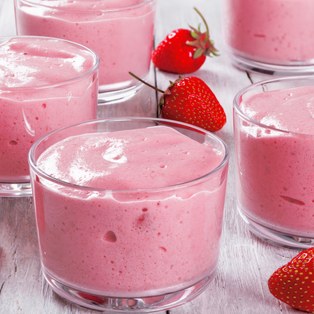

Mousse de Morango
Lista de Ingredientes:
- 1 colher (chá) de emulsificante
- 1 pote de iogurte natural gelado
- 1 envelope de gelatina em pó sabor morango
- 2 colheres (sopa) de açúcar
- 3 xícaras (chá) de morangos fatiados
- 4 colheres (sopa) de geleia de morango
Modo de Preparo:
Na batedeira, bata o iogurte, o emulsificante, a geleia e o açúcar até dobrarem de volume e deixe na geladeira por 30 minutos. No fundo de uma taça grande, alterne camadas de morango e creme, finalizando com a fruta. Prepare a gelatina de acordo com as instruções da embalagem, leve à geladeira e, quando começar a firmar (consistência de clara de ovo), despeje sobre os morangos. Deixe na geladeira até a gelatina firmar.